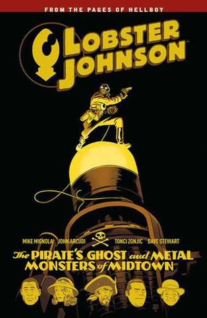

The Pirate's Ghost

The Lobster is at his pulpiest in a pair of three-part stories drawn by veteran Lobster artist Tonci Zonjic. A trio of robots terrorize New York City, and the only thing more mysterious than their origins is their motives. When a pirate ship's ghostly crew appears on the Hudson River out of thin air, the harbor patrol calls on the Lobster! Collects Lobster Johnson: Metal Monsters of Midtown #1-3 and Lobster Johnson: The Pirate's Ghost #1-3.